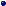
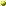
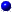
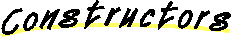
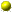
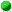

All Packages Class Hierarchy This Package Previous Next Index
Class com.objectplanet.gui.TabbedPanel
java.lang.Object
|
+----java.awt.Component
|
+----java.awt.Container
|
+----java.awt.Panel
|
+----com.objectplanet.gui.TabbedPanel
- public class TabbedPanel
- extends Panel
- implements WindowListener
This class implements a tabbed panel component. You can place any component
in the panel, and each component will have a named tab assosiated with it.
The user can choose between the components by selecting the tabs.
The tabs can be either at the top, bottom, left, or right of the panel.
The user can also detach a tab into its own top-level window.
The user can detach a component into its own window by selecting a
tab with the right mouse button. The component will then be detached
into it's own top-level application window which the user can change
the size of. The window is reattached to the tabbed panel by closing
it.
- Author:
- Bjorn J. Kvande.

-

BOTTOM
- Tabs go at the bottom
-
LEFT
- Tabs go at the left
-
RIGHT
- Tabs go at the right
-
TOP
- Tabs go at the top
-

TabbedPanel()
- Creates an empty TabbedPanel with the tabs at the top.
-
TabbedPanel(int)
- Creates an empty TabbedPanel with the given tab orientation.

-
 add(String, Component)
add(String, Component)
- Adds a new component to the panel.
-
addTabbedListener(TabbedListener)
- Adds a tabbed panel event listener.
-
contains(String)
- Checks if a tab with this name exists in the panel.
-
detach(String)
- Detaches the specified tab into a top-level window.
-
doLayout()
- Lays out the current visible component.
-
get(String)
- Gets the component with the given name from the panel.
-
getComponentCount()
- Gets the number of components in the panel.
-
getInsets()
- This method is overridden to pad the panel to make space for the tabs.
-
getOrientation()
- Gets the current orientation of the tabs.
-
getTabColor()
- Gets the default color of the tabs.
-
getTabColor(String)
- Gets the color of the specified tab.
-
getTabFont()
- Gets the font used for the tab labels.
-
getTabLabelColor()
- Gets the default color of the tab labels.
-
getTabLabelColor(String)
- Gets the color of the specified tab label.
-
getTabName(int)
- Gets the name of the specified tab.
-
getTitle()
- Gets the title of the panel.
-
getTitleFont()
- Gets the title font.
-
isDetachable()
- Checks if the tabs in the panel are detachable.
-
isDetached(String)
- Checks if the given tab is detached.
-
isEnabled(String)
- Checks if the given tab is enabled or disabled.
-
isShowing(String)
- Checks if the given tab is the one currently showing.
-
 main(String[])
main(String[])
- Displays the version info.
-
paint(Graphics)
- Paints the tabbed panel component.
-
processEvent(AWTEvent)
- Procecces the events for the tabbed panel.
-
remove(String)
- Removes the component with the given name from the panel.
-
removeTabbedListener(TabbedListener)
- Removes the specified event listener from the panel.
-
render(Graphics)
- Renders the tabs.
-
retach(String)
- Reattaches a component that has been detached from the panel.
-
setDetachable(boolean)
- Turns on or off the possibility to detach a tab.
-
setEnabled(String, boolean)
- Enables or disables the given tab.
-
setOrientation(int)
- Sets the orientation of the tabs.
-
setTabColor(Color)
- Sets the color of the tabs.
-
setTabColor(String, Color)
- Sets the color of the specified tab.
-
setTabFont(Font)
- Sets the font used for the tab labels.
-
setTabLabelColor(Color)
- Sets the color of the tab labels.
-
setTabLabelColor(String, Color)
- Sets the color of the specified tab label.
-
setTitle(String)
- Sets the title of the panel.
-
setTitleFont(Font)
- Sets the font of the title.
-
show(String)
- Shows the component with the given name.
-
update(Graphics)
- Overridden to avoid flicker.
-
windowActivated(WindowEvent)
- Does nothing
-
windowClosed(WindowEvent)
- Does nothing
-
windowClosing(WindowEvent)
- Called when the detached window is closing
-
windowDeactivated(WindowEvent)
- Does nothing
-
windowDeiconified(WindowEvent)
- Does nothing
-
windowIconified(WindowEvent)
- Does nothing
-
windowOpened(WindowEvent)
- Does nothing


TOP
public static final int TOP
- Tabs go at the top
BOTTOM
public static final int BOTTOM
- Tabs go at the bottom
LEFT
public static final int LEFT
- Tabs go at the left
RIGHT
public static final int RIGHT
- Tabs go at the right


TabbedPanel
public TabbedPanel()
- Creates an empty TabbedPanel with the tabs at the top.
TabbedPanel
public TabbedPanel(int orientation)
- Creates an empty TabbedPanel with the given tab orientation.
- Parameters:
- orientation - The tab bar orientation (TOP, BOTTOM, LEFT, RIGHT).

 addTabbedListener
addTabbedListener
public void addTabbedListener(TabbedListener listener)
- Adds a tabbed panel event listener. The listener will receive events
when a tab is selected or deselected, as well as when the tab is
detached from the panel, and reattached again.
- Parameters:
- listener - The listener to add
- See Also:
- removeTabbedListener
removeTabbedListener
public void removeTabbedListener(TabbedListener listener)
- Removes the specified event listener from the panel.
- Parameters:
- listener - The event listener to remove.
- See Also:
- addTabbedListener
add
public Component add(String name,
Component component)
- Adds a new component to the panel. If the name of the tab given for the
component exists from before, the old component will be replaced.
- Parameters:
- name - The name of the tab for the component.
- component - The component to add.
- Returns:
- The component added, or null if none was added
- Overrides:
- add in class Container
- See Also:
- remove
get
public Component get(String name)
- Gets the component with the given name from the panel.
- Parameters:
- name - The name of the tab for the component.
- Returns:
- The component, or null if not found.
getTabName
public String getTabName(int index)
- Gets the name of the specified tab.
- Parameters:
- index - The index of the tab (0-based).
- Returns:
- The name of the tab, or null if not found.
remove
public Component remove(String name)
- Removes the component with the given name from the panel.
If the component is detached, the detach window will be closed
before the component is removed from the tabbed panel.
- Parameters:
- name - The name of the tab for the component.
- Returns:
- The component removed, or null if not found.
- See Also:
- add
contains
public boolean contains(String name)
- Checks if a tab with this name exists in the panel.
- Parameters:
- name - The name to check for.
- Returns:
- True if found, false if not there.
getComponentCount
public int getComponentCount()
- Gets the number of components in the panel.
- Overrides:
- getComponentCount in class Container
show
public Component show(String name)
- Shows the component with the given name. An event will be sent to
the registered event listeners saying that the event was shown.
- Parameters:
- name - The name of the tab for the component.
- Returns:
- The component that was shown, or null if none.
isShowing
public boolean isShowing(String tab)
- Checks if the given tab is the one currently showing.
- Parameters:
- tab - The name of the tab to check.
- Returns:
- True if shown, false otherwise.
- See Also:
- show
setOrientation
public void setOrientation(int orientation)
- Sets the orientation of the tabs.
- Parameters:
- orientation - TOP, BOTTOM, LEFT, or RIGHT.
getOrientation
public int getOrientation()
- Gets the current orientation of the tabs.
- Returns:
- TOP, BOTTOM, LEFT, or RIGHT.
setEnabled
public void setEnabled(String tab,
boolean enabled)
- Enables or disables the given tab.
- Parameters:
- tab - The name of the tab.
- enabled - True for enabled, false for disabled.
- See Also:
- isEnabled
isEnabled
public boolean isEnabled(String tab)
- Checks if the given tab is enabled or disabled.
- Parameters:
- tab - The name of the tab.
- Returns:
- True for enabled, false for disabled.
- See Also:
- setEnabled
setDetachable
public void setDetachable(boolean detachable)
- Turns on or off the possibility to detach a tab.
- Parameters:
- detachable - True for detachable, false otherwise.
isDetachable
public boolean isDetachable()
- Checks if the tabs in the panel are detachable.
- Returns:
- True if detachable, false otherwise.
detach
public void detach(String tab)
- Detaches the specified tab into a top-level window. An event will be
sent to the event listeners, saying that the component was detached.
If detachable is turned off, the tab will not be detached.
- Parameters:
- tab - The name of the tab to detach.
- See Also:
- retach
isDetached
public boolean isDetached(String tab)
- Checks if the given tab is detached.
- Parameters:
- tab - The name of the tab to check.
- Returns:
- True if detached, false otherwise.
retach
public void retach(String tab)
- Reattaches a component that has been detached from the panel. An event
will be sent to the event listeners, saying that the component was
reattached to the panel.
- Parameters:
- tab - The name of the tab that is to be reattached again.
- See Also:
- detach
setTitle
public void setTitle(String title)
- Sets the title of the panel. The title will be displayed
to the side of the tabs.
- Parameters:
- title - The title or null if no title should be used.
getTitle
public String getTitle()
- Gets the title of the panel.
- Returns:
- The title of the panel, or null if no title is set.
setTitleFont
public void setTitleFont(Font font)
- Sets the font of the title.
- Parameters:
- font - The font to use.
getTitleFont
public Font getTitleFont()
- Gets the title font.
setTabFont
public void setTabFont(Font font)
- Sets the font used for the tab labels.
- Parameters:
- font - The font to use.
getTabFont
public Font getTabFont()
- Gets the font used for the tab labels.
setTabColor
public void setTabColor(Color color)
- Sets the color of the tabs.
- Parameters:
- color - The color to use.
getTabColor
public Color getTabColor()
- Gets the default color of the tabs.
setTabColor
public void setTabColor(String tab,
Color color)
- Sets the color of the specified tab. This overrides the default
tab color set with setTabColor(Color).
- Parameters:
- tab - The name of the tab.
- color - The color to use (null to use default tab color).
- See Also:
- setTabColor
getTabColor
public Color getTabColor(String tab)
- Gets the color of the specified tab.
- Parameters:
- tab - The name of the tab.
setTabLabelColor
public void setTabLabelColor(Color color)
- Sets the color of the tab labels.
- Parameters:
- color - The color to use.
getTabLabelColor
public Color getTabLabelColor()
- Gets the default color of the tab labels.
setTabLabelColor
public void setTabLabelColor(String tab,
Color color)
- Sets the color of the specified tab label. This overrides the default
tab label color set with setTabLabelColor(Color).
- Parameters:
- tab - The name of the tab.
- color - The color to use (null to use default tab label color).
- See Also:
- setTabLabelColor
getTabLabelColor
public Color getTabLabelColor(String tab)
- Gets the color of the specified tab label.
- Parameters:
- tab - The name of the tab.
getInsets
public Insets getInsets()
- This method is overridden to pad the panel to make space for the tabs.
In general you should not override this method, and if you do so,
call super.getInsets(), and pad the insets you get from there.
- Overrides:
- getInsets in class Container
doLayout
public void doLayout()
- Lays out the current visible component.
- Overrides:
- doLayout in class Container
update
public void update(Graphics g)
- Overridden to avoid flicker. You should not call this directly.
- Overrides:
- update in class Container
paint
public final void paint(Graphics g)
- Paints the tabbed panel component.
- Overrides:
- paint in class Container
render
public void render(Graphics g)
- Renders the tabs.
- Parameters:
- g - The graphics context used for painting.
windowOpened
public void windowOpened(WindowEvent e)
- Does nothing
windowClosed
public void windowClosed(WindowEvent e)
- Does nothing
windowIconified
public void windowIconified(WindowEvent e)
- Does nothing
windowDeiconified
public void windowDeiconified(WindowEvent e)
- Does nothing
windowActivated
public void windowActivated(WindowEvent e)
- Does nothing
windowDeactivated
public void windowDeactivated(WindowEvent e)
- Does nothing
windowClosing
public void windowClosing(WindowEvent e)
- Called when the detached window is closing
processEvent
protected void processEvent(AWTEvent e)
- Procecces the events for the tabbed panel. The events procecced
are mouse events to change the tabs, as well as the detach
retach events.
- Parameters:
- e - The event to be processed.
- Overrides:
- processEvent in class Container

main
public static void main(String argv[])
- Displays the version info.
All Packages Class Hierarchy This Package Previous Next Index